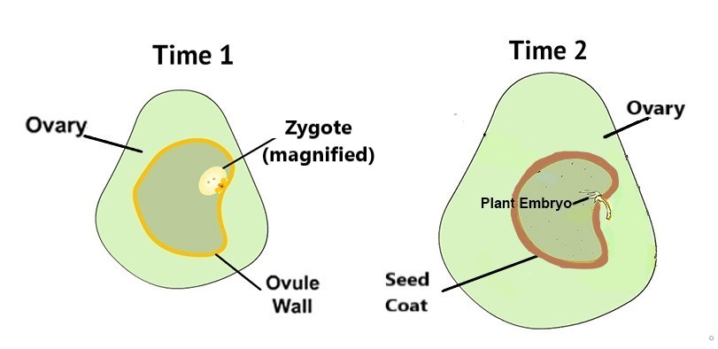
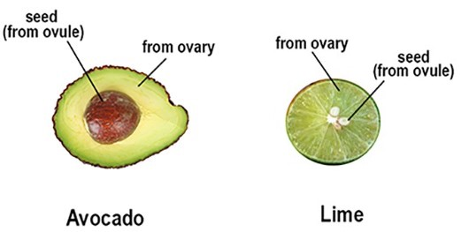
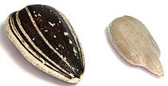

Angiosperms are flowered plants. They are very important to humans and other animals. They are our sources of food, clothing, and medicine. Plants like cotton, sunflowers, vegetables, fruit, as well as trees are all examples of important angiosperms. Because of their importance, humans need to understand how angiosperms reproduce (so we can help them to reproduce, if necessary).
The picture below (left) shows a flower of an angiosperm plant. People often just think of the pretty petals as the “flower.” But the flower is much more than just its pretty petals! The flower also includes the reproductive parts of angiosperms.
Reproductive parts of Angiosperms: The flower is the reproductive organ of the Angiosperm. The petals are colorful and attract things like insects (like the bee shown above) and birds to help in the fertilization process. Some flowers have both male and female reproductive parts in them. Some flowers are either male or female. The flower shown has both male and female reproductive parts.
Angiosperm reproduction: The process of reproduction of angiosperm plants begins with pollination. Pollination happens when pollen is moved from the anther (a male organ of the flower) to the stigma (a female organ of the flower). The stigma can be on either the same or a different flower that the pollen came from.
As shown below, when a pollen grain reaches the stigma, it “tunnels” down the style to the ovary and then to the ovule.
Fertilization. When the sperm cells from the pollen meet the egg cell in the ovule, the egg is fertilized. It now has all the DNA it needs to become a new plant. The newly fertilized egg is called a zygote. The zygote eventually develops into a young plant.
Developing plant. The picture below shows a cross-sectional view of an ovary (light green) with an ovule inside the ovary (shown as darker green). This is shown at two points in time. At Time 1, the egg cell within the ovule has just been fertilized by pollen. The fertilized egg cell (zygote) is magnified in this picture so you can see it. (Since it's only a single cell, in reality, you'd need a microscope to see it.)
Time 2 (shown above, right) is a later time, after the zygote has developed into a little plant embryo. At this time, the ovule wall (yellow-orange in the picture above) has hardened to become a seed coat. This helps to protect the developing plant. As the zygote develops into a plant embryo, the ovary also grows and — in some species — becomes what we call "fruit" which we eat.
Examples of fruits & seeds. In many angiosperms, there are actually several ovules within the ovary. Each ovule forms into a seed. The ovary grows and becomes what we call the "fruit" and eat. Because of their hard shells, we generally remove the seeds within the ovary/fruit we eat.
Here are some more examples of fruits that developed from angiosperm ovaries:
Parts of Sunflower flowers. In sunflowers (shown in the picture below), the disk florets are the darker parts in the middle of the flowers. (The disk florets form the shape of a disc, like a bagel or doughnut.) This is where sunflower seeds are produced. The disk florets are surrounded by bright yellow "ray florets", which look like petals. But each ray floret (or "petal") is actually a flower. But the petal-like ray florets are sterile, mearning they cannot produce seeds.

Each disk floret (the darker yellow or orange parts that together form a donut shape) is a flower. So, what we call a sunflower is actually a whole bunch of little flowers! (Kind of crazy, right?)
One way that pollen gets from anthers to the stigma is when it sticks to insects like bees. Bees might pick up pollen on the hairs of their bodies when they walk on the flowers or even when they just fly by the flowers (see the unit: Angiosperm Pollinators (Bees) for how this happens!). Bees and other insects can then transfer the pollen they have picked up to the stigma and other parts of the same or a different flower when they walk around feeding on the sunflowers.
Fertilization of sunflowers. When pollen gets on the stigma, it starts tunneling down the stigma until it gets to the ovule. The sperm cells from the pollen and egg cell in the ovule join together in the flower’s ovary to form a zygote (a fertilized egg cell). This eventually forms a sunflower seed.
Sunflower seeds. The seeds of the sunflower plant, which is also an angiosperm, are a bit different from other types of seeds. After fertilization, instead of the ovule hardening, the ovary hardens.
As a result, what people tend to think of as a sunflower "seed" (the black and white covering, shown below, to the left) is actually the "fruit" of the sunflower from the ovary (even though you wouldn't want to eat it!). The seed of the sunflower (shown below, right) is actually inside the hard fruit exterior. The seed developed from the sunflower's fertilized ovule. This is what people eat as snacks.



***Note for Teachers: You can access more information about this website and find other resources for science inquiry on the ISP Tutor website.
©2021 Klahr Lab, Carnegie Mellon University. All Rights Reserved
Carnegie Mellon University | Dept. of Psychology | 5000 Forbes Ave. | Pittsburgh, PA 15213 The TED project was funded in part by the Institute of Education Science (IES), Grant R305H060034, and in part by the National Science Foundation, Grant SBE035442. The ISP Tutor project is funded by IES, Grant R305A170176.
The research reported here was supported by the Institute of Education Sciences, U.S. Department of Education, through Grant R305A170176 to Carnegie Mellon University. The opinions expressed are those of the authors and do not represent views of the Institute or the U.S. Department of Education.